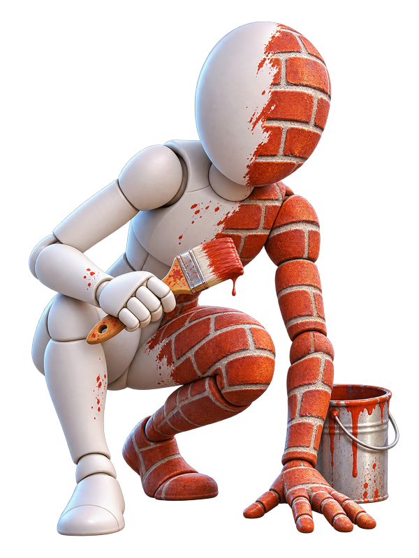

MECCHA CHAMELEON: il nascondino dove per sopravvivere devi ridipingerti da zero

Illustrazione originale ispirata al gioco, non artwork ufficiale.
Un corpo bianco, una tela e una sola regola: se ti vedono, hai perso. Il nascondino diventa un esercizio di pittura.
Analisi editoriale: dati e prezzi verificati sulle fonti ufficiali al 07/11/2026; prezzi indicativi, giudizi redazionali.
MECCHA CHAMELEON parte da un'idea semplice e la porta fino in fondo: non ti nascondi dietro una cassa, ti nascondi dentro la scena. Il personaggio è bianco, la mappa è colorata, e l'unico modo per non farti trovare è dipingerti addosso i colori dell'ambiente. Lo sviluppa e lo pubblica lemorion_1224, ed è disponibile su Steam dal 9 giugno 2026.
Cosa è confermato
- Uscita: 9 giugno 2026, già disponibile.
- Piattaforme: PC (Steam, Windows).
- Genere: nascondino multiplayer, PvP online, con supporto al Workshop di Steam.
- Prezzo: 5,89 € su G2A; 6,15 € su Steam al 07/11/2026.
- Partite: match pubblici, con supporto dichiarato allo streaming.
La descrizione ufficiale è esplicita sui tre pilastri: individuare il punto giusto, posare e abilità artistica. Chi cerca profondità di combattimento non la troverà qui; chi cerca il momento in cui un inseguitore ti passa a un metro e non ti vede, sì.
Perché funziona (quando funziona)
Il bello di un gioco così è che il skill gap non sta nella mira. Sta nella lettura dell'ambiente: capire quali colori servono, dove posare il corpo, quanto osare. Un giocatore che si mimetizza bene può restare immobile in bella vista e vincere la partita senza sparare un colpo, perché in questo gioco non si spara.
Il rischio è quello classico dei party game a mimetizzazione: la curva dipende dai compagni. Con gente che gioca di testa è un gioco di inganni brillante; con chi corre e basta diventa un nascondino qualunque. A 5,89 € su G2A il conto è presto fatto, e il Workshop allunga la vita del titolo.
Lettura redazionale: è il classico "rischio basso, scoperta alta". Non aspettarti una campagna, non aspettarti progressione: aspettati una serata con gli amici in cui ride chi si è dipinto meglio.
Cosa serve per giocarlo su PC
- Minimi: Windows 10 a 64 bit, Intel Core i5, scheda video compatibile DirectX 11 o 12.
La pagina Steam non indica la memoria RAM né i requisiti consigliati: con questi presupposti il gioco gira su una build Economy senza pensarci. Nota: i requisiti sono quelli dichiarati dallo sviluppatore e possono cambiare con gli aggiornamenti.
A chi è adatto
A chi piace giocare in compagnia senza prendere nulla sul serio, a chi ama i giochi in cui l'inganno vale più del riflesso. Meno adatto a chi cerca una progressione, una storia o un multiplayer competitivo strutturato.
Il gioco non chiede molto, ma se parti da zero qui trovi le build PC.
Dove acquistare
Vedi MECCHA CHAMELEON su G2A →
Prezzo indicativo: 5,89 € su G2A · 6,15 € su Steam. Aggiornato al 07/11/2026.
Fonti: scheda Steam (data, prezzo, requisiti, descrizione ufficiale).